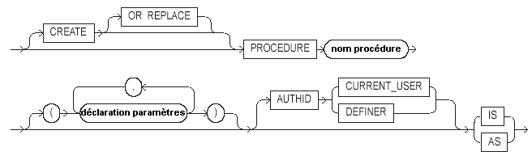
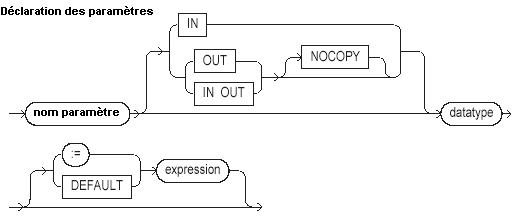
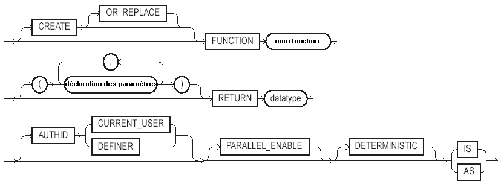
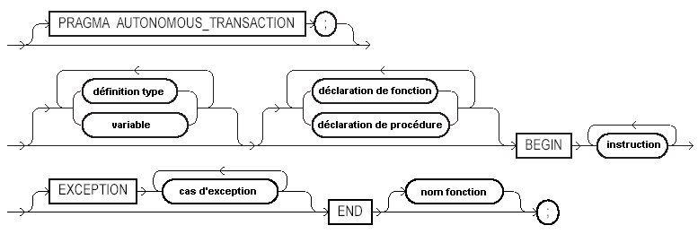
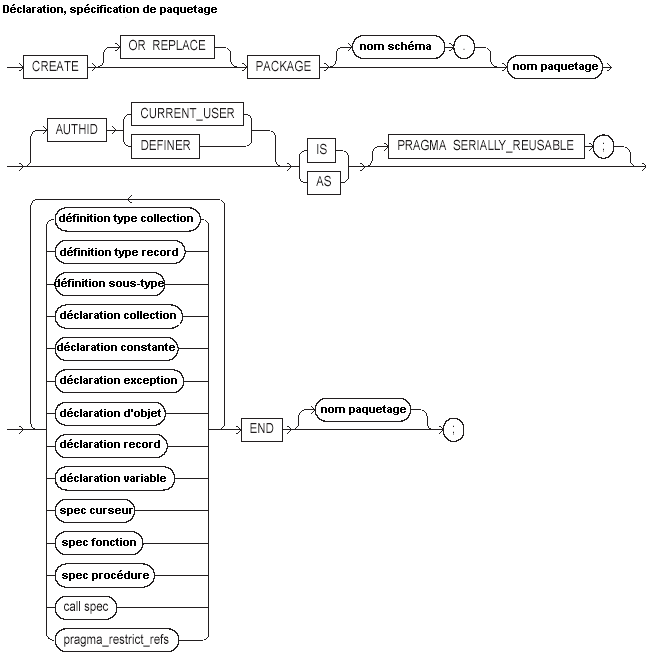
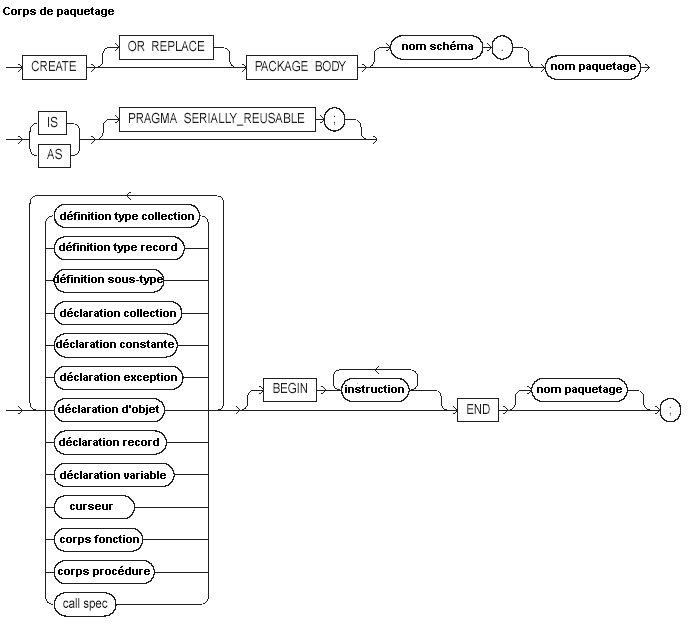

Oracle PL/SQL
Date de publication : Avril 2004 ,
Date de mise a jour : Juillet 2004
4. Procédures, Fonctions et paquetages
4.1. Les Procédures
4.2. Les Fonctions
4.3. Les Paquetages
4.4. Fonctions sur des ensembles de lignes (PIPELINED) (9i)
4.5. Maintenance des objets procéduraux
4. Procédures, Fonctions et paquetages
Une procédure est un ensemble de code PL/SQL nommé, défini par l'utilisateur et généralement stocké dans la BDD
Une fonction est identique à une procédure à la différence qu'elle retourne une valeur
Un paquetage est le regroupement de plusieurs procédures et fonctions dans un objet distinct
Ces ensembles nommés sont stockés dans la base de données, offrant les avantages suivants :
-
Le code relatif aux règles de gestion est centralisé. Cela permet de dissocier les fonctions au sein d'une équipe
La partie traitement des règles de gestion est confiée à une partie de l'équipe et la conception des interfaces
est confiée à l'autre partie
-
Ces traitements stockés sont donc déportés des interfaces clientes, permettant le partage du code entre plusieurs applications
ainsi qu'une amélioration des performances, car le code stocké est pré-compilé
-
Ces traitements sont accessibles par toute application tierce supportant l'appel des procédures stockées (Sql*Plus, Forms, Reports, Pro*C, Pro*Cobol, etc.)
-
Cela permet également de tirer parti de la réutilisation des requêtes dans la base qui se trouvent dans le pool partagé de la zone SGA(System Global Area)
Pour créer un objet procédural, vous devez disposer du privilège système CREATE PROCEDURE pour votre schéma
ou du privilège système CREATE ANY PROCEDURE pour la création dans un autre schéma
Pour autoriser un autre schéma à exécuter une procédure de votre schéma, vous devez lui octroyer le privilège EXECUTE
GRANT EXECUTE ON ma_procedure TO autre_schéma
4.1. Les Procédures
Une procédure est un ensemble de code PL/SQL nommé, défini par l'utilisateur et généralement stocké dans la BDD
Une procédure est paramétrable afin d'en faciliter la réutilisation

CREATE indique que l'on veut créer une procédure stockée dans la base
La clause facultative OR REPLACE permet d'écraser une procédure existante portant le même nom
nom procédure est le nom donné par l'utilisateur à la procédure
AUTHID indique sur quel schéma la procédure s'applique :
Indique que la procédure utilise les objets du schéma de l'utilisateur qui appelle la procédure
Indique que la procédure utilise les objets du schéma de création de la procédure

nom paramètre est le nom donné par l'utilisateur au paramètre transmis
IN(valeur par défaut) indique que le paramètre transmis par le programme appelant n'est pas modifiable par la procédure
OUT indique que le paramètre est modifiable par la procédure
IN OUT indique que le paramètre est transmis par le programme appelant et renseigné par la procédure
NOCOPY indique que le paramètre est transmis par référence (pointeur) et non par copie de la valeur
Par défaut, les paramètres sont transmis par copie, c'est à dire qu'un espace mémoire est créé pour recevoir une copie de la valeur
avec la clause NOCOPY, aucun espace mémoire supplémentaire n'est créé, c'est donc l'adresse de l'espace mémoire initial qui est transmise, permettant d'une part de ne pas gaspiller la mémoire disponible (surtout lorsqu'il s'agit de grands objets (LOB) et également
d'éviter le temps nécessaire à la gestion de ces nouveaux espace mémoire (empilement, dépilement, etc.)
datatype représente le type SQL ou PL/SQL du paramètre
:= représente le symbole d'assignation d'une valeur par défaut
DEFAULT identique à :=
expression représente la valeur par défaut du paramètre (doit être conforme au type du paramètre)
Créons une procédure permettant d'augmenter le salaire d'un employé
SQL> CREATE OR REPLACE PROCEDURE Augmentation
2 (
3 PN$Numemp IN EMP.empno%Type
4 ,PN$Pourcent IN NUMBER
5 ) IS
6 BEGIN
7
8 Update EMP Set sal = sal * PN$Pourcent
9 Where empno = PN$Numemp ;
10 END;
11 /
Procédure créée.
La procédure Augmentation reçoit deux paramètres
PN$Numemp en entrée (IN) de même type que la colonne empno de la table EMP qui reçoit le numéro d'employé
PN$Pourcent en entrée (IN) de type NUMBER qui reçoit le pourcentage d'augmentation
Faisons maintenant appel à cette procédure dans un bloc PL/SQL anonyme
SQL> Declare
2 LR$Emp EMP%Rowtype ;
3 Begin
4 Select * Into LR$Emp From EMP Where empno = 7369 ;
5 dbms_output.put_line( 'Avant augmentation ' || To_char( LR$Emp.empno )
6 || ' ' || LR$EMp.ename || '
7 Augmentation( 7369, 1.1 ) ;
8 Select * Into LR$Emp From EMP Where empno = 7369 ;
9 dbms_output.put_line( 'Après augmentation ' || To_char( LR$Emp.empno )
10 || ' ' || LR$EMp.ename || '
11 End ;
12 /
Avant augmentation 7369 SMITH
Après augmentation 7369 SMITH
Procédure PL/SQL terminée avec succès.
Les paramètres sont passés lors de l'appel de la fonction
D'une façon générale, les procédures ne devraient pas exécuter d'instruction de fin de transaction (COMMIT, ROLLBACK, Ordre DDL)
La décision d'enregistrer ou annuler la transaction en cours relève du programme appelant
Si toutefois, le traitement impose un enregistrement en base, la procédure peut être déclarée Autonome,
via la directive de compilation PRAGMA AUTONOMOUS_TRANSACTION
Imaginons que vous ayez besoin d'une procédure de trace qui utilise l'instruction INSERT pour enregistrer vos messages dans une table d'erreurs
Afin de dépister correctement la trace désirée, cette procédure doit enregistrer chaque insertion avec l'instruction COMMIT
Cependant, nous voulons que cet enregistrement ne valide que les instructions de notre procédure de trace
Pour atteindre cet objectif, nous allons donc créer une procédure autonome
Nous avons besoin d'une table de trace
SQL> CREATE TABLE TRACE(
2 UTI Varchar2(30) DEFAULT USER
3 ,DDATE Date DEFAULT SYSDATE
4 ,LIGNE Varchar2(4000) ) ;
Table créée.
Cette table permettra de stocker l'utilisateur, la date et la ligne de trace
Nous allons créer maintenant notre procédure
Celle-ci pourra utiliser au choix la sortie du message sur écran avec la fonction DBMS_OUTPUT.PUT_LINE,
ou bien l'insertion dans la table de trace
Au passage nous allons augmenter les possibilité natives
En effet la fonction DBMS_OUTPUT.PUT_LINE est limitée à 255 caractères, et une colonne VARCHAR2 à 4000
Qu'à cela ne tienne, nous allons contourner le problème en découpant le message en tranches, permettant d'afficher quelque soit la méthode jusqu'à 32767 caractères
SQL> CREATE OR REPLACE procedure DEBUG ( PC$Message in VARCHAR2, PC$Output in VARCHAR2 DEFAULT 'E' )
2 Is
3 PRAGMA AUTONOMOUS_TRANSACTION ;
4 LC$Chaine Varchar2(4000) ;
5 LN$Tranches PLS_INTEGER ;
6 LN$Reste PLS_INTEGER ;
7 LN$Pos PLS_INTEGER := 1 ;
8 LN$Inc PLS_INTEGER ;
9 Begin
10
11 If PC$Output = 'E' Then
12
13 LN$Inc := 255 ;
14 LN$Tranches := Length( PC$Message ) / LN$Inc ;
15 LN$Reste := MOD( Length( PC$Message ), LN$Inc ) ;
16 If LN$Reste > 0 Then LN$Tranches := LN$Tranches + 1 ; End if ;
17
18
19 For i in 1..LN$Tranches Loop
20 LC$Chaine := Substr( PC$Message, LN$Pos, LN$Inc ) ;
21 DBMS_OUTPUT.PUT_LINE( LC$Chaine ) ;
22 LN$Pos := LN$Pos + LN$Inc ;
23 End loop ;
24
25 Else
26
27 LN$Inc := 4000 ;
28 LN$Tranches := Length( PC$Message ) / LN$Inc ;
29 LN$Reste := MOD( Length( PC$Message ), LN$Inc ) ;
30 If LN$Reste > 0 Then LN$Tranches := LN$Tranches + 1 ; End if ;
31
32
33 For i in 1..LN$Tranches Loop
34 LC$Chaine := Substr( PC$Message, LN$Pos, LN$Inc ) ;
35 Insert into TRACE (LIGNE) Values ( LC$Chaine ) ;
36 Commit ;
37 LN$Pos := LN$Pos + LN$Inc ;
38 End loop ;
39 End if ;
40
41 End;
42 /
Procédure créée.
Cette procédure accepte en premier paramètre la chaîne de caractères de trace (max 32767 caractères)
et en deuxième paramètre (facultatif) le type de sortie désiré E pour écran (défaut), différent de E pour table
La directive de compilation PRAGMA AUTONOMOUS_TRANSACTION en entête de la section déclarative indique
que cette procédure s'exécute dans sa propre transaction.
Utilisons maintenant cette procédure pour notre système de trace sur écran
SQL> set linesize 100
SQL> Declare
2 LC$Ch Varchar2(32767) ;
3 Begin
4 LC$Ch := Rpad( '1', 300, '1' ) || Rpad( '2', 300, '2' ) ;
5 Debug( LC$Ch ) ;
6 End ;
7 /
1111111111111111111111111111111111111111111111111111111111111111111111111111111111111111111111111111
1111111111111111111111111111111111111111111111111111111111111111111111111111111111111111111111111111
1111111111111111111111111111111111111111111111111111111
1111111111111111111111111111111111111111111112222222222222222222222222222222222222222222222222222222
2222222222222222222222222222222222222222222222222222222222222222222222222222222222222222222222222222
2222222222222222222222222222222222222222222222222222222
222222222222222222222222222222222222222222222222222222222222222222222222222222222222222222
Procédure PL/SQL terminée avec succès.
Puis sur table
SQL> Declare
2 LC$Ch Varchar2(32767) ;
3 Begin
4 LC$Ch := Rpad( '1', 2100, '1' ) || Rpad( '2', 2100, '2' ) ;
5 Debug( LC$Ch, 'T' ) ;
6 End ;
7 /
Procédure PL/SQL terminée avec succès.
SQL> select * from trace ;
UTI DDATE
LIGNE
SCOTT 13/03/04
11111111111111111111111111111111111111111111111111111111111111111111111111111111111111111111111111111111111
11111111111111111111111111111111111111111111111111111111111111111111111111111111111111111111111111112222222
SCOTT 13/03/04
22222222222222222222222222222222222222222222222222222222222222222222222222222222222222222222222222222222222
etc...
Lorsqu'un paramètre est passé en mode OUT, la procédure peut le modifier.
Le programme appelant doit avoir défini une variable correspondante dans sa section déclarative
SQL> CREATE OR REPLACE PROCEDURE Test_Augmentation
2 (
3 PN$Numemp IN EMP.empno%Type
4 ,PN$Pourcent IN OUT NUMBER
5 ) IS
6 LN$Salaire EMP.sal%Type ;
7 BEGIN
8 Select sal Into LN$Salaire From EMP Where empno = PN$Numemp ;
9
10 PN$Pourcent := LN$Salaire * PN$Pourcent ;
11 END;
12 /
Procédure créée.
SQL> select empno, sal from emp where empno = 7369 ;
EMPNO SAL
7369 880
SQL> Declare
2 LN$Pourcent NUMBER := 1.1 ;
3 Begin
4 Test_Augmentation( 7369, LN$Pourcent ) ;
5 dbms_output.put_line( 'Employé 7369 après augmentation : ' || To_char( LN$Pourcent ) ) ;
6 End ;
7 /
Employé 7369 après augmentation : 968
4.2. Les Fonctions
Une fonction est identique à une procédure à la différence qu'elle retourne obligatoirement une valeur
d'où le mot clé obligatoire RETURN


CREATE indique que l'on veut créer une fonction stockée dans la base
La clause facultative OR REPLACE permet d'écraser une fonction existante portant le même nom
nom fonction est le nom donné par l'utilisateur à la fonction
AUTHID indique sur quel schéma la fonction s'applique :
Indique que la fonction utilise les objets du schéma de l'utilisateur qui appelle la fonction
Indique que la fonction utilise les objets du schéma de création de la fonction
nom paramètre est le nom donné par l'utilisateur au paramètre transmis
IN(valeur par défaut) indique que le paramètre transmis par le programme appelant n'est pas modifiable par la fonction
OUT indique que le paramètre est modifiable par la procédure
IN OUT indique que le paramètre est transmis par le programme appelant et renseigné par la fonction
NOCOPY indique que le paramètre est transmis par référence (pointeur) et non par copie de la valeur
datatype représente le type SQL ou PL/SQL du paramètre
:= représente le symbole d'assignation d'une valeur par défaut
DEFAULT identique à :=
expression représente la valeur par défaut du paramètre (doit être conforme au type du paramètre)
PRAGMA AUTONOMOUS_TRANSACTION indique que la fonction sera exécutée dans une transaction autonome
Au chapitre sur les procédures, nous avons vu la procédure permettant de simuler une augmentation
en retournant le nouveau salaire théorique dans une variable IN OUT
Transformons cette procédure en fonction
SQL> CREATE OR REPLACE FUNCTION F_Test_Augmentation
2 (
3 PN$Numemp IN EMP.empno%Type
4 ,PN$Pourcent IN NUMBER
5 ) Return NUMBER
6 IS
7 LN$Salaire EMP.sal%Type ;
8 BEGIN
9 Select sal Into LN$Salaire From EMP Where empno = PN$Numemp ;
10
11 LN$Salaire := LN$Salaire * PN$Pourcent ;
12 Return( LN$Salaire ) ;
13 END;
14 /
Fonction créée.
La valeur de retour de la fonction est directement utilisable, même sans déclaration d'une variable d'accueil
SQL> Declare
2 LN$Salaire emp.sal%Type ;
3 Begin
4 Select sal Into LN$Salaire From EMP Where empno = 7369 ;
5 dbms_output.put_line( 'Salaire de 7369 avant augmentation ' || To_char( LN$Salaire ) ) ;
6 dbms_output.put_line( 'Salaire de 7369 après augmentation ' || To_char( F_Test_Augmentation( 7369, 1.1 ) ) ) ;
7 End ;
8 /
Salaire de 7369 avant augmentation 880
Salaire de 7369 après augmentation 968
Procédure PL/SQL terminée avec succès.
4.3. Les Paquetages
Un paquetage est un ensemble de procédures et fonctions regroupées dans un objet nommé
Par exemple le paquetage Oracle DBMS_LOB regroupe toutes les fonctions et procédures manipulant les grands objets (LOBs)
Le paquetage UTL_FILE regroupe les procédures et fonctions permettant de lire et écrire des fichiers du système d'exploitation
Un paquetage est organisé en deux parties distinctes
-
Une partie spécification
qui permet de spécifier à la fois les fonctions et procédures publiques ainsi que les déclarations des types, variables, constantes, exceptions et curseurs utilisés dans le paquetage et visibles par le programme appelant
-
Une partie corps
qui contient les blocs et les spécifications de tous les objets publics listés dans la partie spécification
Cette partie peut inclure des objets qui ne sont pas listés dans la partie spécification, et sont donc privés
Cette partie peut également contenir du code qui sera exécuté à chaque invocation du paquetage par l'utilisateur


La déclaration de la partie spécification d'un paquetage s'effectue avec l'instruction CREATE [OR REPLACE] PACKAGE
Celle de la partie corps avec l'instruction CREATE [OR REPLACE] PACKAGE BODY
SQL> CREATE OR REPLACE PACKAGE Pkg_Finance
2 IS
3
4 GN$Salaire EMP.sal%Type ;
5
6
7 FUNCTION F_Test_Augmentation
8 (
9 PN$Numemp IN EMP.empno%Type
10 ,PN$Pourcent IN NUMBER
11 ) Return NUMBER ;
12
13
14 PROCEDURE Test_Augmentation
15 (
16 PN$Numemp IN EMP.empno%Type
17 ,PN$Pourcent IN OUT NUMBER
18 ) ;
19
20 End Pkg_Finance ;
21 /
Package créé.
SQL> CREATE OR REPLACE PACKAGE BODY Pkg_Finance IS
2
3
4 GR$Emp EMP%Rowtype ;
5
6
7 PROCEDURE Affiche_Salaires
8 IS
9 CURSOR C_EMP IS select * from EMP ;
10 BEGIN
11 OPEN C_EMP ;
12 Loop
13 FETCH C_EMP Into GR$Emp ;
14 Exit when C_EMP%NOTFOUND ;
15 dbms_output.put_line( 'Employé ' || GR$Emp.ename || '
16 End loop ;
17 CLOSE C_EMP ;
18 END Affiche_Salaires ;
19
20
21 FUNCTION F_Test_Augmentation
22 (
23 PN$Numemp IN EMP.empno%Type
24 ,PN$Pourcent IN NUMBER
25 ) Return NUMBER
26 IS
27 LN$Salaire EMP.sal%Type ;
28 BEGIN
29 Select sal Into LN$Salaire From EMP Where empno = PN$Numemp ;
30
31 LN$Salaire := LN$Salaire * PN$Pourcent ;
32
33
34 GN$Salaire := LN$Salaire ;
35
36 Return( LN$Salaire ) ;
37 END F_Test_Augmentation;
38
39
40 PROCEDURE Test_Augmentation
41 (
42 PN$Numemp IN EMP.empno%Type
43 ,PN$Pourcent IN OUT NUMBER
44 ) IS
45 LN$Salaire EMP.sal%Type ;
46 BEGIN
47 Select sal Into LN$Salaire From EMP Where empno = PN$Numemp ;
48
49 PN$Pourcent := LN$Salaire * PN$Pourcent ;
50
51
52 Affiche_Salaires ;
53
54 END Test_Augmentation;
55
56
57 END Pkg_Finance;
58 /
Corps de package créé.
La spécification du paquetage est créée avec une variable globale et publique : GN$Salaire
une procédure publique : PROCEDURE Test_Augmentation
une fonction publique : FUNCTION F_Test_Augmentation
qui sont visibles depuis l'extérieur (le programme appelant)
Le corps du paquetage est créé avec une procédure privée : PROCEDURE Afiche_Salaires qui n'est visible que dans le corps du paquetage
Le corps définit également une variable globale au corps du paquetage : GR$Emp utilisée par la procédure privée
L'accès à un objet d'un paquetage est réalisé avec la syntaxe suivante :
nom_paquetage.nom_objet[(liste paramètres)]
Appel de la fonction F_Test_Augmentation du paquetage
SQL> Declare
2 LN$Salaire emp.sal%Type ;
3 Begin
4 Select sal Into LN$Salaire From EMP Where empno = 7369 ;
5 dbms_output.put_line( 'Salaire de 7369 avant augmentation '
6 || To_char( LN$Salaire ) ) ;
7 dbms_output.put_line( 'Salaire de 7369 après augmentation '
8 || To_char( Pkg_Finance.F_Test_Augmentation( 7369, 1.1 ) ) ) ;
9 End ;
10 /
Salaire de 7369 avant augmentation 880
Salaire de 7369 après augmentation 968
Procédure PL/SQL terminée avec succès.
Appel de la procédure Test_Augmentation du paquetage
SQL> Declare
2 LN$Pourcent NUMBER := 1.1 ;
3 Begin
4 Pkg_Finance.Test_Augmentation( 7369, LN$Pourcent ) ;
5 dbms_output.put_line( 'Employé 7369 après augmentation : ' || To_char( LN$Pourcent ) ) ;
6 End ;
7 /
Employé SMITH
Employé ALLEN
Employé WARD
Employé JONES
Employé MARTIN
Employé BLAKE
Employé CLARK
Employé SCOTT
Employé KING
Employé TURNER
Employé ADAMS
Employé JAMES
Employé FORD
Employé MILLER
Employé Dupontont
Employé Duboudin
Employé 7369 après augmentation : 968
Procédure PL/SQL terminée avec succès.
Interrogation de la variable globale publique : GN$Salaire
SQL> Begin
2 dbms_output.put_line( 'Valeur salaire du package : ' || To_char( Pkg_Finance.GN$Salaire ) ) ;
3 End ;
4 /
Valeur salaire du package : 968
Procédure PL/SQL terminée avec succès.
4.4. Fonctions sur des ensembles de lignes (PIPELINED) (9i)
Oracle 9i
Depuis la version 9i apparaît une nouvelle possibilité de PL/SQL de pouvoir définir des fonctions qui acceptent en argument des collections ou des références à un curseur, et qui retournent les données au fur et à mesure de l'exécution de la fonction.
Lors de la déclaration de la fonction, le mot clé PIPELINED est ajouté dans l'entête et les informations sont retournées à l'aide de la commande PIPE ROW.
Soit l'exemple suivant
SQL> create type MtSal as object (numemp number(4), salaire number(7,2) ) ;
2 /
Type créé.
SQL> create type MtSalTab as table of MtSal ;
2 /
Type créé.
SQL> CREATE OR REPLACE function LigneSalaire (cur_lig in SYS_REFCURSOR)
2 return MtSalTab PIPELINED
3 IS
4 LSal MtSal := MtSal (NULL,NULL) ;
5 Remp emp%rowtype ;
6 Begin
7 Loop
8 Fetch cur_lig into Remp ;
9 Exit When cur_lig%NOTFOUND ;
10
11 LSal.numemp := Remp.empno ;
12 LSal.salaire := Remp.sal * 1.1 ;
13
14 PIPE ROW( LSal ) ;
15 End loop ;
16 Return ;
17 End ;
18 /
Fonction créée.
SQL> Select numemp, salaire from
2 table(LigneSalaire(CURSOR(Select * from EMP)))
3 /
NUMEMP SALAIRE
7369 968
7499 1936
7521 1512,5
7566 3600,3
7654 1512,5
7698 3448,5
7782 2964,5
7788 3630
7839 6050
7844 1815
7876 1331
7900 1149,5
7902 3630
7934 1573
14 ligne(s) sélectionnée(s).
L'instruction table(LigneSalaire(CURSOR(Select * from EMP))) indique que la fonction LigneSalaire retourne un ensemble de données.
Cet exemple est bien évidemment simpliste, mais on peut imaginer toutes sortes de traitements sur les lignes du curseur avant de renvoyer le résultat.
Pour faire une estimation de la masse salariale totale après une augmentation de salaire de 10% pour l'ensemble du personnel, il suffit d'interroger la fonction de la façon suivante :
SQL> Select sum(salaire) from
2 table(LigneSalaire(CURSOR(Select * from EMP)))
3 /
SUM(SALAIRE)
35120,8
Bien entendu un résultat équivalent pourrait être obtenu avec la requête :
select sum(sal * 1.1) from emp;
mais, répétons-le le traitement effectué dans la fonction peut être beaucoup plus élaboré.
4.5. Maintenance des objets procéduraux
Visualisation du code source
Le code source des objets procéduraux est visible par l'intermédiare des vues du dictionnaire de données
USER_SOURCE pour les objets appartenant au schéma
ALL_SOURCE pour les objets appartenant aux schémas accessibles
DBA_SOURCE pour les objets appartenant à tous les schémas
SQL> desc user_source
Nom
NAME
TYPE
LINE
TEXT
Pour dissocier le code des procédures, fonctions et paquetages, la restriction sur la colonne TYPE doit être la suivante :
- Procédure : TYPE = 'PROCEDURE'
- Fonction : TYPE = 'FUNCTION'
- Spécification de paquetage : TYPE = 'PACKAGE'
- Corps de paquetage : TYPE = 'PACKAGE BODY'
SQL> Select text from user_source
2 Where name = 'AUGMENTATION'
3 And type = 'PROCEDURE'
4 /
TEXT
PROCEDURE Augmentation
(
PN$Numemp IN EMP.empno%Type
,PN$Pourcent IN NUMBER
) IS
BEGIN
Update EMP Set sal = sal * PN$Pourcent
Where empno = PN$Numemp ;
END;
10 ligne(s) sélectionnée(s).
Compilation des objets
- Procédure : ALTER PROCEDURE nom_procédure COMPILE
- Fonction : ALTER FUNCTION nom_fonction COMPILE
- Spécification de paquetage : ALTER PACKAGE nom_package COMPILE PACKAGE
- Corps de paquetage : ALTER PACKAGE nom_package COMPILE BODY
- Spécification + Corps de paquetage : ALTER PACKAGE nom_package COMPILE
Suppression des objets
- Procédure : DROP PROCEDURE nom_procédure
- Fonction : DROP FUNCTION nom_fonction
- Paquetage entier : DROP PACKAGE nom_package
- Corps de paquetage : DROP PACKAGE BODY nom_package
Copyright ©2004 SheikYerbouti.
Aucune reproduction, même partielle, ne peut être faite
de ce site et de l'ensemble de son contenu : textes, documents, images, etc
sans l'autorisation expresse de l'auteur. Sinon vous encourez selon la loi jusqu'à 3 ans de prison et jusqu'à 300 000 E
de dommages et intérets. Cette page est déposée à la SACD.
|